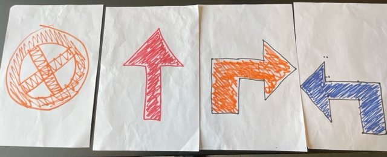
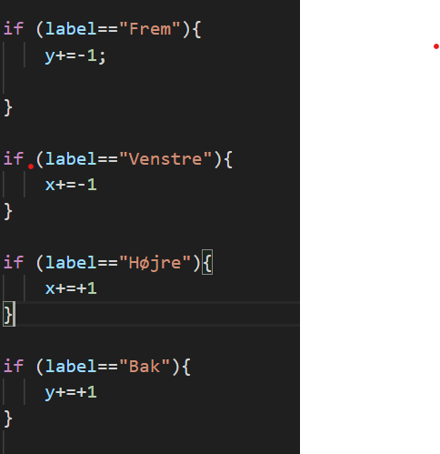

I det her forløb har vi arbejdede med kunstig intelligens og machine learning, og har i forbindelse med dette lavet et program, hvor vi ved hjælp af input fra kameraet (stopskilte, højresving/venstresving osv.) kan få en bil til at køre af sig selv. Kravene til projektet var at bilen kunne:
Navigere på en virtuel bane
Stoppe for rødt
Hvordan fungerer programmet
Vi startede med at tegne forskellige "vejskilte" på nogle papirer som i sidste ende skal bestemme hvilken retning bilen kører, de fem muligheder der var for vores bil er kør frem, drej til højre, drej til venstre, kør tilbage og stop. Vi har derefter på hjemmesiden "Teachable Machines" taget en masse billeder af de papirer og brugt den data til at træne modellen til at kunne bestemme hvilken af de 5 muligheder det er mest sandsynligt at den ser gennem kameraet. Da modellen ikke kan være 100% sikker i hvad der bliver vist, virker modellen på den måde at det er det mest sandsynlige resultat der bestemmer hvad bilen skal gøre, så hvis modellen er 70% sikker i at skiltet siger drej til højre og kun 30% sikker i skiltet siger drej til venstre, så gør den det mest sandsynlige og drejer til højre. Herunder er de fire "Vejskilte" vi havde, hvor den røde pil både var frem og tilbage i forhold til hvilken vej man vender den:

Kodestump
Denne her kodestump viser hvordan vi har fået bilen til at bevæge sig ud fra det input vi giver kameraet. Vi kan fx se i linje 59, der starter med en "if" command. Den fortæller at hvis modellen bestemmer at labelet er "frem" ud fra hvad den ser gennem kameraet, så lægger vi 1 til vores y-værdi og dermed bevæger bilen længere op ad skærmen, og den kører fremad på den virtuelle bane.

Afsluttende kommentar
Dette projekt er ret relevant og nutidigt da selvkørende biler er noget som vi ser mere og mere til, og i fremtiden vil der måske kun være selvkørende biler. Der er selvfølgelig en række problemer ved dette program der ikke ville være acceptabelt hvis det var virkelige biler. Det går selvfølgelig ikke at programmet får bilen til at bevæge sig ud fra det mest sandsynlige resultat, selv hvis sandsynlgheden kun er lidt over 50%. En mulig løsning til det ville være at sige at bilen kun skal dreje hvis sandsynligheden er over et bestemt niveau. En anden løsning kunne være at der var et lille delay på så bilen kun skal dreje hvis den er sikker på noget i over et bestemt tid, hvilket selvfølgelig også skaber en række problemer. Så var der også det problem med vores model at der ikke var nogen "default" setting, så når vi ikke holdt et papir oppe foran kameraet kørte bilen helt kaotisk. Dette ville også være ret problemtatisk, men kunne måske løses sammen med det første problem ved at sige at hvis modellen ikke er over fx 80% sikker i en af mulighederne for bilen, så står bilen bare stille.
Imellem header tags, "head" "/head", placeres metadata som browseren skal bruge for at vise siden rigtigt. Her bruges meta charset="UTF-8" så browseren kan skrive æåø rigtigt.
Tilbage til hovedsiden